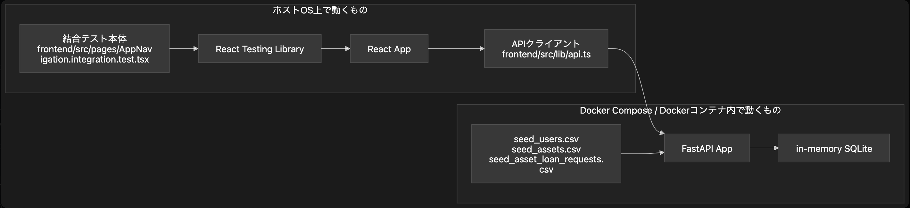

基本方針
目標はカバレッジ率の達成ではなく、重要な業務ロジックの欠落を防ぐ。 カバレッジは未テスト箇所の発見には使うが、数値のためのテスト実装は優先しない。
AssetFlowテスト仕様書
台帳全体の目的、運用ルール、分類軸をまとめて確認できる入口にする。
目標はカバレッジ率の達成ではなく、重要な業務ロジックの欠落を防ぐ。 カバレッジは未テスト箇所の発見には使うが、数値のためのテスト実装は優先しない。
ファイル単位より業務機能単位で台帳を育てる。 テストコードの保守コストが高すぎる場合は粒度を見直し、資産として維持できる範囲で増やす。
フロントエンド単体テストとバックエンド単体テストは同じ業務機能名で並べる。 横断テストは結合、E2E の順で整理し、ハッピーパスに絞って実施する。
このテスト方針は、GitLab の testing strategy / testing levels、 Google Testing Blog、Martin Fowler の test coverage / test pyramid の考え方を参考に整理した。 低いレベルのテストから始めること、重複を避けること、E2E は重要導線に絞ること、 coverage を数値目標そのものとして扱いすぎないことを重視している。
GitLab Testing Strategy GitLab Testing Levels Google Testing Blog: How Much Testing is Enough? Martin Fowler: Test Coverage Martin Fowler: Test Pyramid Martin Fowler: Integration Test
フロントエンドとバックエンドで守る責務を分け、壊れたときの影響が大きい振る舞いを優先して確認する。
結合テストと E2E の役割と実装方針を分けて、どこをモックし、どこを実環境寄りに確認するかを整理する。
結合テストは、代表的なハッピーパスの正常系に絞って、各機能観点を確認する。
結合テストは、下記の構成で実施する。

E2E テスト（自動）は、基本的に結合テストと同じ構成で実施するが、下記の差分がある。
結合テストと E2E テストで基準とする seed CSV の内容を確認する。どの利用者・備品・貸出申請データを前提にテストしているかを、このタブから追えるようにする。
認証、権限制御、申請者表示の前提となる利用者データ。この CSV の内容が DB の users テーブルに投入される。
id,name,login_id,password,role,department 1,一般ユーザー,user@example.com,AssetFlow2026!,user,営業 2,管理ユーザー,admin@example.com,AssetFlow2026!,admin,情報システム 3,山田太郎,taro.yamada@example.com,AssetFlow2026!,user,経理
備品一覧、貸出申請、在庫表示の前提となる備品データ。この CSV の内容が DB の assets テーブルに投入される。
name,category,total_stock,status "MacBook Pro 14""",パソコン,6,available "Dell 27"" 4K Monitor",モニター,5,available HHKB Studio,キーボード,2,available Magic Mouse,マウス,10,available Herman Miller Aeron,家具,2,available Jabra Speak2 75,会議機器,4,available Sony WH-1000XM5,ヘッドセット,6,available Anker 737 Power Bank,アクセサリー,8,available Apple MacBook Air 13,パソコン,7,available Surface Laptop 6,パソコン,5,available ThinkPad X1 Carbon,パソコン,4,available HP EliteBook 840,パソコン,6,available ASUS Zenbook 14,パソコン,3,available 4K Display 32,モニター,8,available 2K Portable Monitor,モニター,5,available 液晶ディスプレイ 24インチ,モニター,9,available BenQ ScreenBar Halo,周辺機器,4,available モニターアーム シングル,周辺機器,11,available Logitech MX Keys,キーボード,6,available Keychron K3 Pro,キーボード,0,available 日本語配列キーボード,キーボード,7,available テンキー付きキーボード,キーボード,3,available Logitech MX Master 3S,マウス,8,available USB-C Travel Mouse,マウス,12,available 静音ワイヤレスマウス,マウス,10,available Webカメラ 1080p,カメラ,6,available Logitech Brio 4K,カメラ,4,available 360 Meeting Camera,会議機器,2,available Poly Studio P15,会議機器,3,available 会議用スピーカーフォン,会議機器,5,available Yamaha YVC-200,会議機器,4,available AirPods Pro 2,ヘッドセット,6,available Bose QuietComfort,ヘッドセット,3,available 有線ヘッドセット,ヘッドセット,8,available ノイズキャンセルヘッドホン,ヘッドセット,4,available USB-C Hub 7-in-1,アクセサリー,15,available HDMI Adapter,アクセサリー,18,available 65W USB-C Charger,電源機器,12,available 100W GaN Charger,電源機器,7,available 延長電源タップ,電源機器,9,available iPad Pro 11,タブレット,4,available iPad Air,タブレット,5,available Android Tablet 10,タブレット,3,available タブレットスタンド,アクセサリー,8,available 1TB Portable SSD,ストレージ,6,available 2TB Backup HDD,ストレージ,5,available 外付けSSD 500GB,ストレージ,7,available Wi-Fi 6 Router,ネットワーク,3,available 8-Port Gigabit Switch,ネットワーク,4,available LANケーブル 5m,ネットワーク,20,available Ergonomic Chair,家具,5,available 昇降デスク,家具,3,available フットレスト,家具,6,available 卓上マイク,オーディオ,4,available Blue Yeti Microphone,オーディオ,2,available
マイ貸出状況、承認状態、返却・キャンセル導線の前提となる貸出申請データ。この CSV の内容が DB の asset_loan_requests テーブルに投入される。
asset_name,requester_name,user_id,start_date,end_date,reason,quantity,status "Dell 27"" 4K Monitor",一般ユーザー,1,2026-07-26,2026-07-31,"Dell 27"" 4K Monitor のテスト貸出申請",2,loaned HHKB Studio,一般ユーザー,1,2026-07-10,2026-07-28,HHKB Studio のテスト貸出申請,2,approved Magic Mouse,一般ユーザー,1,2026-07-28,2026-08-02,Magic Mouse のテスト貸出申請,1,loaned Herman Miller Aeron,一般ユーザー,1,2026-07-12,2026-07-30,Herman Miller Aeron のテスト貸出申請,2,loaned Jabra Speak2 75,一般ユーザー,1,2026-07-30,2026-08-04,Jabra Speak2 75 のテスト貸出申請,3,loaned Sony WH-1000XM5,一般ユーザー,1,2026-07-14,2026-08-01,Sony WH-1000XM5 のテスト貸出申請,1,loaned Anker 737 Power Bank,一般ユーザー,1,2026-08-01,2026-08-06,Anker 737 Power Bank のテスト貸出申請,2,loaned Apple MacBook Air 13,一般ユーザー,1,2026-07-16,2026-08-03,Apple MacBook Air 13 のテスト貸出申請,3,loaned ThinkPad X1 Carbon,一般ユーザー,1,2026-07-09,2026-07-27,ThinkPad X1 Carbon のテスト貸出申請,2,approved HP EliteBook 840,一般ユーザー,1,2026-07-27,2026-08-01,HP EliteBook 840 のテスト貸出申請,3,loaned ASUS Zenbook 14,一般ユーザー,1,2026-07-11,2026-07-29,ASUS Zenbook 14 のテスト貸出申請,1,loaned 4K Display 32,一般ユーザー,1,2026-07-29,2026-08-03,4K Display 32 のテスト貸出申請,2,loaned 2K Portable Monitor,一般ユーザー,1,2026-07-13,2026-07-31,2K Portable Monitor のテスト貸出申請,3,loaned 液晶ディスプレイ 24インチ,一般ユーザー,1,2026-07-31,2026-08-05,液晶ディスプレイ 24インチ のテスト貸出申請,1,loaned BenQ ScreenBar Halo,一般ユーザー,1,2026-07-15,2026-08-02,BenQ ScreenBar Halo のテスト貸出申請,2,loaned モニターアーム シングル,一般ユーザー,1,2026-08-02,2026-08-07,モニターアーム シングル のテスト貸出申請,3,rejected Logitech MX Keys,一般ユーザー,1,2026-07-08,2026-07-26,Logitech MX Keys のテスト貸出申請,1,loaned Keychron K3 Pro,一般ユーザー,1,2026-07-26,2026-07-31,Keychron K3 Pro のテスト貸出申請,1,loaned 日本語配列キーボード,一般ユーザー,1,2026-07-10,2026-07-28,日本語配列キーボード のテスト貸出申請,3,loaned テンキー付きキーボード,一般ユーザー,1,2026-07-28,2026-08-02,テンキー付きキーボード のテスト貸出申請,1,loaned Logitech MX Master 3S,一般ユーザー,1,2026-07-12,2026-07-30,Logitech MX Master 3S のテスト貸出申請,2,loaned USB-C Travel Mouse,一般ユーザー,1,2026-07-30,2026-08-04,USB-C Travel Mouse のテスト貸出申請,3,loaned 静音ワイヤレスマウス,一般ユーザー,1,2026-07-14,2026-08-01,静音ワイヤレスマウス のテスト貸出申請,1,loaned Webカメラ 1080p,一般ユーザー,1,2026-08-01,2026-08-06,Webカメラ 1080p のテスト貸出申請,2,pending Logitech Brio 4K,一般ユーザー,1,2026-07-16,2026-08-03,Logitech Brio 4K のテスト貸出申請,3,loaned 360 Meeting Camera,一般ユーザー,1,2026-07-25,2026-07-30,360 Meeting Camera のテスト貸出申請,1,pending Poly Studio P15,一般ユーザー,1,2026-07-09,2026-07-27,Poly Studio P15 のテスト貸出申請,2,loaned 会議用スピーカーフォン,一般ユーザー,1,2026-07-27,2026-08-01,会議用スピーカーフォン のテスト貸出申請,3,pending Yamaha YVC-200,一般ユーザー,1,2026-07-11,2026-07-29,Yamaha YVC-200 のテスト貸出申請,1,loaned AirPods Pro 2,一般ユーザー,1,2026-07-29,2026-08-03,AirPods Pro 2 のテスト貸出申請,2,pending Bose QuietComfort,一般ユーザー,1,2026-07-13,2026-07-31,Bose QuietComfort のテスト貸出申請,3,loaned 有線ヘッドセット,一般ユーザー,1,2026-07-31,2026-08-05,有線ヘッドセット のテスト貸出申請,1,pending ノイズキャンセルヘッドホン,一般ユーザー,1,2026-07-15,2026-08-02,ノイズキャンセルヘッドホン のテスト貸出申請,2,loaned USB-C Hub 7-in-1,一般ユーザー,1,2026-08-02,2026-08-07,USB-C Hub 7-in-1 のテスト貸出申請,3,pending HDMI Adapter,一般ユーザー,1,2026-07-08,2026-07-26,HDMI Adapter のテスト貸出申請,1,loaned 65W USB-C Charger,一般ユーザー,1,2026-07-26,2026-07-31,65W USB-C Charger のテスト貸出申請,2,pending 100W GaN Charger,一般ユーザー,1,2026-07-10,2026-07-28,100W GaN Charger のテスト貸出申請,3,rejected 延長電源タップ,一般ユーザー,1,2026-07-28,2026-08-02,延長電源タップ のテスト貸出申請,1,pending iPad Pro 11,一般ユーザー,1,2026-07-12,2026-07-30,iPad Pro 11 のテスト貸出申請,2,loaned iPad Air,一般ユーザー,1,2026-07-30,2026-08-04,iPad Air のテスト貸出申請,3,pending Android Tablet 10,一般ユーザー,1,2026-07-14,2026-08-01,Android Tablet 10 のテスト貸出申請,1,loaned タブレットスタンド,一般ユーザー,1,2026-08-01,2026-08-06,タブレットスタンド のテスト貸出申請,2,pending 1TB Portable SSD,一般ユーザー,1,2026-07-16,2026-08-03,1TB Portable SSD のテスト貸出申請,3,loaned USB-C Hub 7-in-1,一般ユーザー,1,2026-08-03,2026-08-08,USB-C Hub 7-in-1 のテスト貸出申請,1,approved LANケーブル 5m,山田太郎,3,2026-08-04,2026-08-08,LANケーブル 5m のテスト貸出申請,1,pending HDMI Adapter,山田太郎,3,2026-08-01,2026-08-05,HDMI Adapter のテスト貸出申請,1,approved 延長電源タップ,山田太郎,3,2026-08-02,2026-08-06,延長電源タップ のテスト貸出申請,1,approved Magic Mouse,山田太郎,3,2026-08-01,2026-08-04,Magic Mouse のテスト貸出申請,1,rejected 液晶ディスプレイ 24インチ,山田太郎,3,2026-08-03,2026-08-07,液晶ディスプレイ 24インチ のテスト貸出申請,1,rejected 65W USB-C Charger,山田太郎,3,2026-08-04,2026-08-09,65W USB-C Charger のテスト貸出申請,1,rejected モニターアーム シングル,山田太郎,3,2026-07-29,2026-08-03,モニターアーム シングル のテスト貸出申請,1,loaned USB-C Travel Mouse,山田太郎,3,2026-07-30,2026-08-04,USB-C Travel Mouse のテスト貸出申請,1,loaned 静音ワイヤレスマウス,山田太郎,3,2026-08-01,2026-08-06,静音ワイヤレスマウス のテスト貸出申請,1,loaned USB-C Hub 7-in-1,山田太郎,3,2026-08-02,2026-08-07,USB-C Hub 7-in-1 のテスト貸出申請,1,loaned
|
No.
|
分類
|
画面
|
観点
|
確認対象種類
|
対象ファイル
|
確認対象名（確認順）
|
期待結果
|
優先度
|
実装状況
|
結果
|
|---|